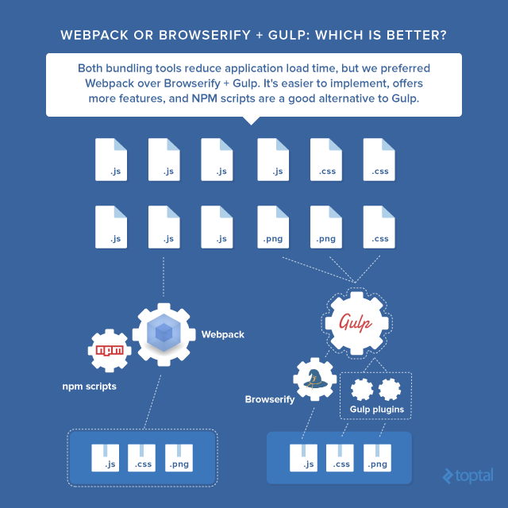

图片来源
查找最新版本
在项目目录下创建webpack.config.js文件，写入:
1.首先从context目录开始
2.寻找入口文件entry
3.根据入口文件查找相关依赖，直到到达最顶层
4.将所有文件打包到output.path，根据entry命名[name]
多文件工作
1.多个文件打包为一个文件
打包为app.bundle.js
2.多个文件打包为多个文件
打包为home.bundle.js,event.bundle.js和vendor.bundle.js
提取公共模块
有些时候我们可能会将打包分成几块输出，此时由于代码分散，某些模块在另外一些模块中需要则会多次被打包，如何解决这种冗余问题?
通过这个插件，若我们有任何模块被导入超过2次(由miniChunks设置),它就会将其打包到commons.js,这样虽然我们多了一次HTTP请求，但是减少了多次下载同样代码的情况
devServer
The publicPath specifies the public URL address of the output files when referenced in a browser. For loaders that embed
<script>or<link>tags or reference assets like images, publicPath is used as the href or url() to the file when it’s different then their location on disk (as specified by path). This can be helpful when you want to host some or all output files on a different domain or on a CDN. The Webpack Dev Server also takes a hint from publicPath using it to determine where to serve the output files from. As with path you can use the [hash] substitution for a better caching profile.
创建src/index.html：
最后在终端运行:
此时就可以在localhost:8080访问了，需要注意的是，webpack支持热加载，所以任何JS文件发生改变都会实时更新在浏览器上，而webpack.config.js文件发生改变则需要重启服务器才能生效
打包为库
有时候想把文件打包为一个库，应当如何做?
此时会将你的打包文件关联为window.myCLassName的一个实例，这样就能通过它调用方法
output.library
If set, export the bundle as library. output.library is the name.
Use this if you are writing a library and want to publish it as single file.
Loaders
上文中提到的工作全部是针对JS文件，那么其他文件该如何处理呢？只需要通过loaders传递即可
1.ES6 loader
首先安装Babel相关:
配置webpack.config.js
在这里，我们可以通过配置test项使某些非ES6写法的文件夹下的文件不被babel转译
2.CSS+Style loader
安装插件
添加规则
loaders运行顺序与配置数组相反，即首先运行css-loader，之后运行style-loader。
你会发现即便是在生产环境中，这个操作会将你的CSS和你的JS打包在一起，style-loader会自动将样式写入<head>。这样做的好处在于减少了HTTP请求，同时也防止了FOUC现象的发生;
你还会发现Webpack自动处理了CSS中的@import，即将它们打包在一起;
Sass
安装
修改规则: